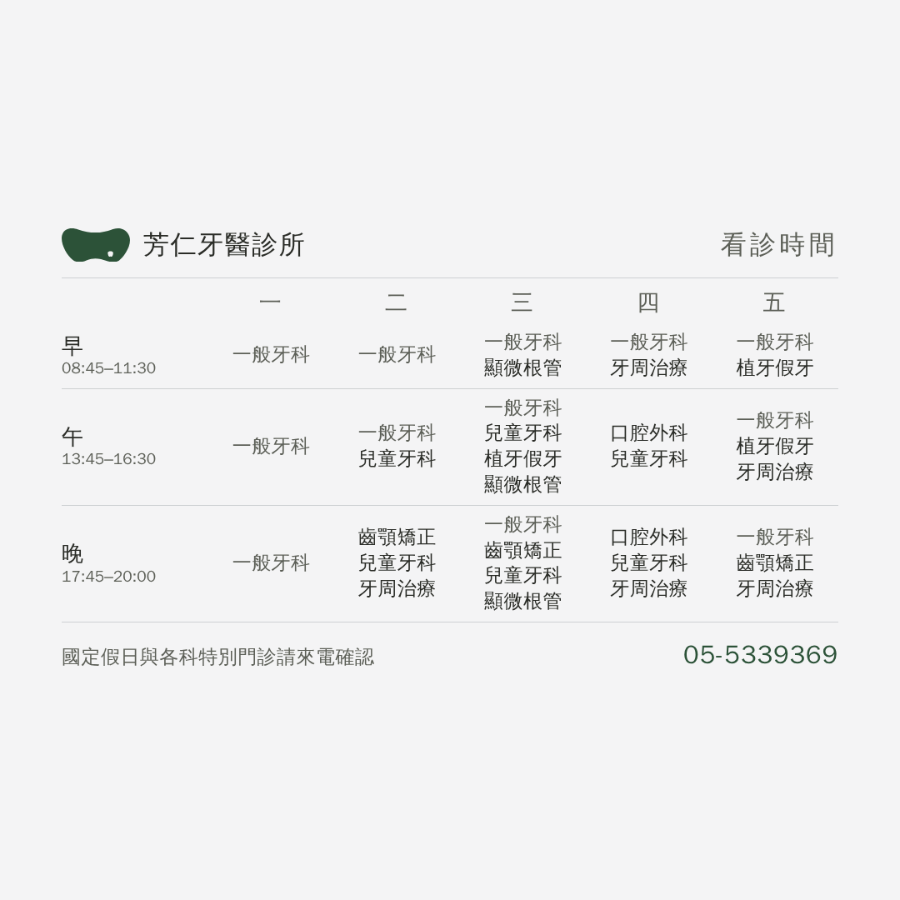
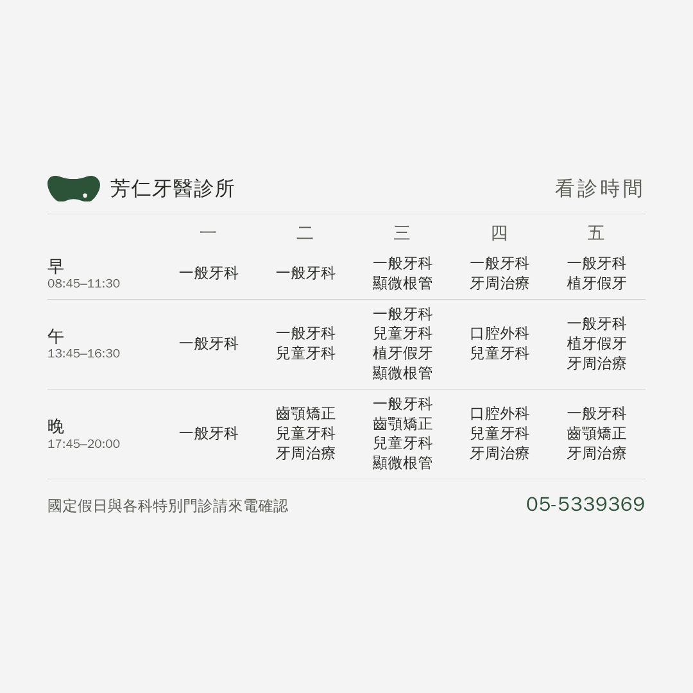
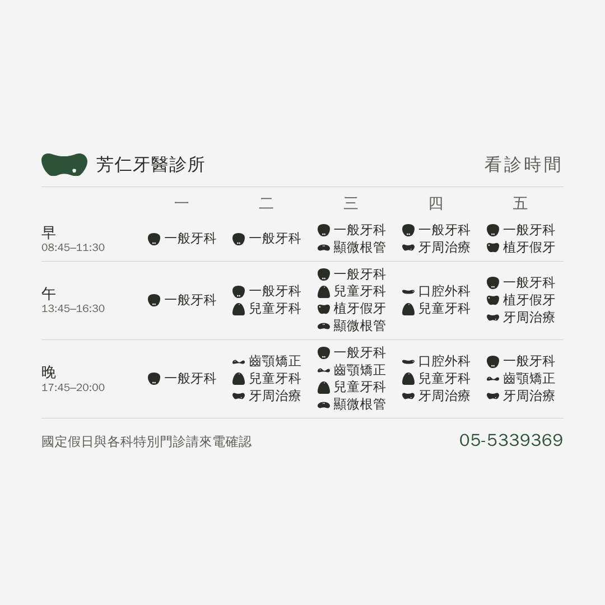
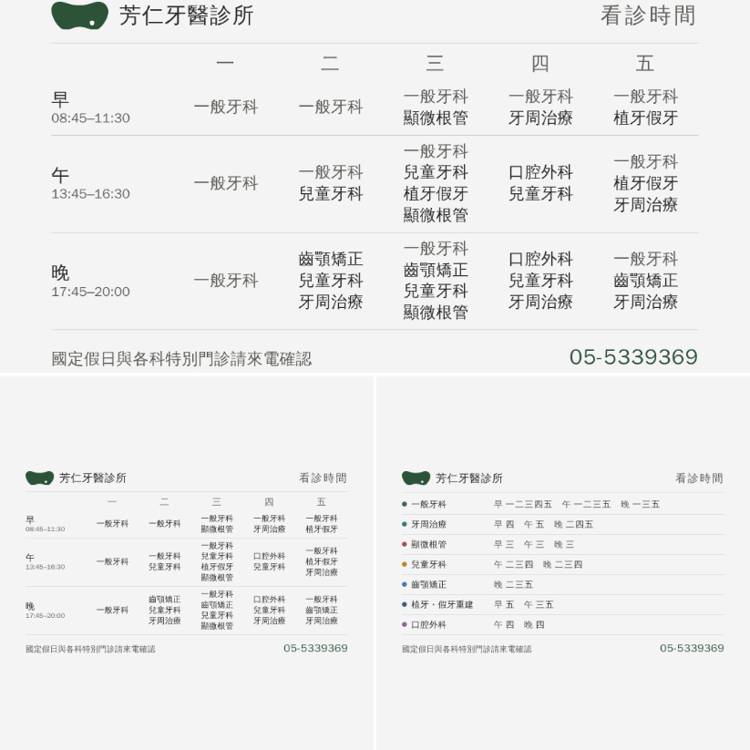
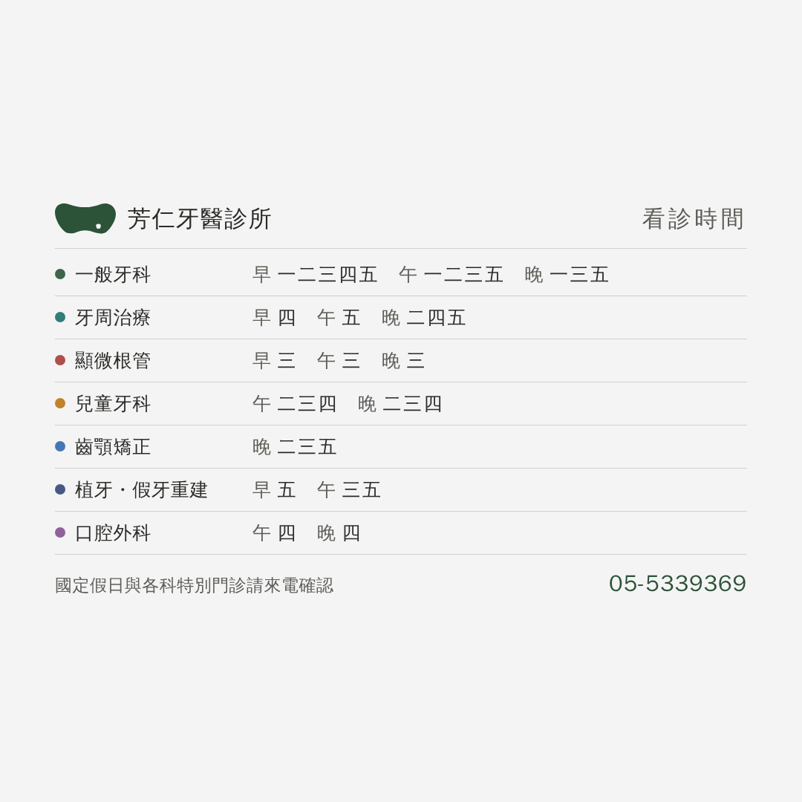

「光以文字應該就能區分科別」——對。
但全部同一階會讓表變得很平，所以中間那一案多做一件事。

⚠ 一般牙科在 15 節裡佔 12 節——它是「這一節有沒有開診」的背景，
不是「這一節有什麼特別的」。
和其他六科一樣重，等於讓最不需要找的東西佔掉最多視覺重量（25 個名字裡有 12 個是它）。
退一階之後，五科特別門診自己跳出來。

最乾淨。代價是要一個字一個字讀——掃過去分不出哪幾節有特別門診。

⚠ 不建議，而且是量出來的：
診所那九顆標誌變體畫成 22px（＝這裡記號的大小），
兩兩不同的像素比例最不像的一對也只有 20.9%、中位 16.7%
（同樣九顆在 150px 的浮水印上是 52.0%／26.6%）。
它們是同一個標誌的九種變體，不是九個不同的圖示——放小就分不出來。
而且一格最多 4 個項目，25 顆記號比顏色更花，和你要的方向相反。
要走這條路得新畫七個科別圖示（象徵物），那是另一件事。

大格會把 1080 的圖上下各切掉 271 列，所以識別與電話收在中間那條帶子裡。
⚠ 到底是裁還是留白我們沒驗過——表單右上角那顆預覽按一下就有答案。
排班、時段、電話都是從站上 index.html 讀回來的，
不重打——診所改排班，重跑一次就好。

你說格子比較好，這一張留著當對照。
它唯一贏的地方：顯微根管排出來是「早三 午三 晚三」，全在週三自己跳出來。